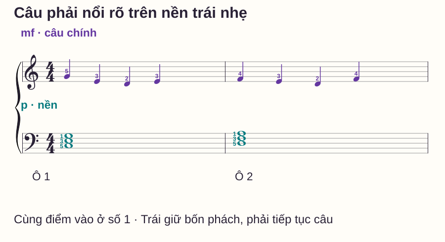
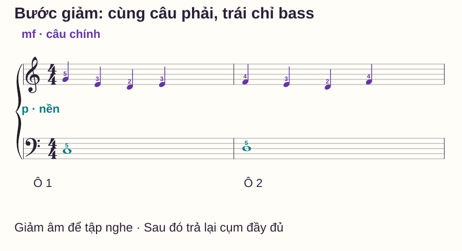
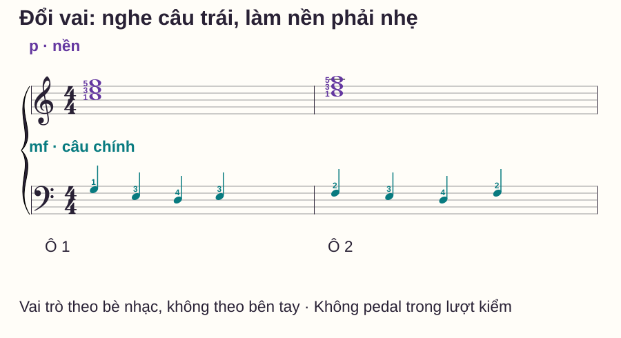

Kỹ thuật piano
Tay trái lấn tay phải khi chơi piano: cách cân bằng hai bè
# Tay trái lấn tay phải khi chơi piano: cách cân bằng hai bè
Bạn ghép được đúng nốt, nhưng thứ nghe rõ nhất lại là hợp âm tay trái ở đầu mỗi ô. Câu giai điệu bị che, hoặc tay phải phải chơi thật mạnh để “thắng” phần đệm. Đây là lúc cần luyện quan hệ giữa các lớp âm, không chỉ tăng âm lượng của cả bài.
Bài tập dưới giữ số ô và nốt khá ít để dành sự chú ý cho việc nghe. Bạn sẽ học câu phải, thêm bass rồi trả lại cụm ba âm, sau đó thử một phiên bản có giai điệu bên trái. Đích cuối là nghe rõ vai trò mỗi bè, không mặc định tay phải luôn to hơn.
Trả lời nhanh
Khi tay trái lấn tay phải, hãy xác định bè nào đang mang giai điệu rồi nghe riêng câu đó trước. Giữ giai điệu ở mức âm thoải mái, thêm phần đệm nhẹ hơn và kiểm xem các nốt giai điệu có còn nghe thành câu không. Nếu cụm ba âm làm khó kiểm soát, giảm tạm còn bass để học quan hệ âm lượng, rồi trả lại đúng phần đệm đầy đủ. Không có tỉ lệ lực cố định giữa hai tay. Trong mẫu đổi vai, giai điệu nằm bên trái nên nhiệm vụ cân bằng cũng đổi; không áp công thức “trái luôn nhẹ, phải luôn mạnh” cho mọi bản nhạc.
Cân bằng nghĩa là nghe đúng vai trò
Âm lượng tổng và cân bằng giữa các bè là hai việc khác nhau. Vặn âm lượng đàn lớn hơn làm cả hai phần cùng lớn; nó không tự làm câu giai điệu rõ hơn phần đệm. Chơi rất nhỏ cũng có thể vẫn mất cân bằng nếu hợp âm át các tiếng giai điệu ở những điểm quan trọng.
Piano Adventures — Level 1 Q&A bàn tới việc giảm số âm của thế đệm để thuận lợi hơn cho kỹ thuật và cân bằng melody–harmony ở người mới. Ở bài này, ta dùng một phiên bản bass riêng như bước tập tạm, rồi kiểm lại với cụm đầy đủ; không thay bản nhạc một cách không báo trước.
Đánh một phím mạnh hơn không làm nó cần phải vào sớm hơn. Muốn giai điệu rõ, trước hết vẫn giữ đúng thời điểm. Nếu tay trái được chơi chậm vào hoặc ngắn đi ngoài chỉ dẫn để tránh át, bạn đã thay cả tiết tấu/trường độ chứ chưa chỉ chỉnh cân bằng.
Đọc câu mẫu và đặt vùng tay
C4 là Đô giữa. Phải đặt ngón 1–5 lần lượt trên C4–D4–E4–F4–G4. Trái dùng C3–E3–G3 rồi D3–F3–A3, ngón từ thấp lên 5–3–1 ở mỗi cụm. Cụm sau là Dm, Rê thứ, có ba thành phần D–F–A.
Mẫu nhịp 4/4: phải có bốn nốt đen mỗi ô, trái một cụm nốt tròn. Ký hiệu mf bên phải và p bên trái là gợi ý tương quan trong bài: câu phải nổi rõ ở mức vừa, nền trái nhẹ. Chúng không phải phần trăm lực hoặc số âm lượng cố định cho mọi đàn.

| Ô | Giai điệu phải: mỗi nốt một phách | Nền trái: một cụm bốn phách |
|---|---|---|
| 1 | G4–E4–D4–E4, ngón 5–3–2–3 | C3–E3–G3, ngón 5–3–1 |
| 2 | F4–E4–D4–F4, ngón 4–3–2–4 | D3–F3–A3, ngón 5–3–1 |
Không phải mọi nốt giai điệu đều phải là thành phần của hợp âm đang giữ: ví dụ D4 trong ô C tạo một chuyển động trong câu. Ở lượt này giữ đúng các nốt đã viết, không tự đổi nốt để làm chúng cùng hòa âm.
Bước 1: nghe rõ câu phải khi chưa thêm trái
Chơi phải riêng, không pedal. Đếm đều và nghe cả tám tiếng. Bạn có nghe được G–E–D–E rồi F–E–D–F như một câu, hay một ngón nào đó làm nốt biến mất? Chưa cần tạo chênh lệch rất lớn giữa các tiếng.
Đặt mức âm thoải mái mà bạn có thể lặp lại, không phải mức mạnh tối đa. Nếu ghép vào phải tăng sức liên tục, quay lại nghe phần đệm và giảm nhiệm vụ của nó. Không dùng căng cứng tay phải làm cách duy nhất để tạo tương phản.
Bước 2: giảm trái còn một bass để học quan hệ
Giữ nguyên câu phải nhưng thay cụm trái bằng C3 tròn rồi D3 tròn, mỗi bass dùng ngón 5. Đây là phiên bản giảm âm có chủ đích để tập nghe; chưa phải bản đầy đủ ở hình đầu.

Bắt đầu riêng ô 1. G4 và C3 cùng vào ở số 1; chỉ thử cho C3 nhẹ hơn trong khi G4 vẫn nghe rõ và không vào lệch. Giữ C3 đủ bốn phách khi phải tiếp tục ba tiếng còn lại.
Nếu bass biến mất hoàn toàn, tăng vừa đủ để nghe được nền; mục tiêu không phải xóa trái khỏi câu. Nếu bass luôn bật lớn ở đầu ô 2, học riêng điểm cùng vào F4/D3 rồi nối hai ô. Không cố tạo tiếng nhẹ bằng cách tới phím muộn.
Bước 3: trả lại cụm ba âm và so cùng điều kiện
Trở lại hình đầy đủ. Hai âm thêm vào làm phần nền dày hơn, vì vậy cần nghe lại tương quan, không chỉ giữ cảm giác tay y hệt rồi giả định kết quả đã đúng. Thử riêng một cụm ở mức nhẹ nhưng đủ tiếng, sau đó thêm câu phải.
Làm hai lượt ngắn, cùng tempo: lượt A chưa chủ ý chỉnh quan hệ, lượt B giữ câu phải thoải mái và giảm độ nổi của trái. Không cần cố tình nện trái mạnh ở lượt A. Nghe xem lượt B có còn đủ nốt, nhịp và độ dài như A hay đã vô tình bỏ âm/nhả sớm.
Nếu ghi âm, giữ nguyên vị trí máy, mức ghi và tiếng đàn. Khi nghe lại, thử lần theo từng nốt giai điệu mà không nhìn tay. Mức tự cân âm của điện thoại có thể làm so sánh kém rõ; vì vậy không dùng hai tệp có thiết lập khác nhau để khẳng định chính xác hơn bao nhiêu decibel.
Mẫu đổi vai: giai điệu nằm bên trái
Hoffman Academy — Melody for Left Hand, Part 2 đặt mục tiêu làm giai điệu trái nổi hơn nền phải. Bài tập bên dưới là mẫu riêng của website, không dùng tác phẩm trong bài học đó.
Tay trái chơi cùng hình câu ở C3–G3: ngón 5 trên C3, 4 trên D3, 3 trên E3, 2 trên F3, 1 trên G3. Phải chuyển sang vùng C5–G5 để giữ cụm C, rồi D5–F5–A5 cho Dm; ngón 1–3–5 mỗi cụm. Đặt từng vùng trước khi chạy nhịp, không cần giữ cả hai cụm phải cùng lúc.

Mẫu đổi vai thay cả vùng âm, nên không dùng nó để đo một mức chênh lệch âm lượng chính xác so với mẫu trước. Nó kiểm một việc khác: bạn có xác định và thực hiện vai trò mới thay vì chỉ giữ một thói quen cố định theo tay không?
Trước hết học trái riêng. Sau đó thêm một nốt nền phải C5/D5 nếu cụm cao còn làm khó, rồi trả lại ba âm. Nếu chưa đọc chắc khóa Fa, dừng ở việc gọi nốt và thời gian; chưa phải tăng tốc để vượt khó đọc.
Bảng lỗi và phép nghe phù hợp
| Điều nghe được | Kiểm điều gì? | Thử sửa |
|---|---|---|
| Chỉ rõ tiếng đầu mỗi ô | Cụm nền có che điểm cùng vào? | Tập riêng cặp tiếng đầu, rồi nghe đủ câu |
| Một vài tiếng phải biến mất | Có ngón chưa kiểm soát hoặc đọc chưa chắc? | Chơi câu riêng trước khi thêm trái |
| Trái nhẹ nhưng ngắn đi | Có thay trường độ để giảm âm không? | Giữ bass/cụm qua 1–2–3–4 rồi ghép |
| Phải to lên nhưng vẫn căng và khó nghe | Có đang tăng cả hai bè? | Giữ phải ở mức thoải mái, giảm nhiệm vụ trái |
| Đổi vai mà vẫn làm phải nổi | Có gắn vai trò với bên tay? | Gọi rõ giai điệu trái, nghe riêng rồi thêm nền phải |
Routine mười phút và tự kiểm
- 0–2 phút: học câu phải riêng, nhận đủ tám nốt và nhịp.
- 2–4 phút: thêm bass C3/D3, kiểm điểm cùng vào ở đầu ô.
- 4–6 phút: trả lại cụm ba âm, giữ đủ thời gian và nghe quan hệ.
- 6–8 phút: thử mẫu giai điệu trái ở tempo kiểm soát được.
- 8–10 phút: ghi/nghe một lượt ngắn và ghi một lỗi cụ thể.
Tự hỏi: hạ âm lượng tổng có chắc sửa được tay trái lấn không? Bản bass riêng đã hoàn thành mẫu ba âm chưa? Khi đổi vai, bè nào cần được nghe thành câu?
Đáp án và điều kiện mở rộng
Hạ âm lượng tổng không tự đổi tương quan hai bè. Bản bass là bước tập giảm, phải kiểm lại đủ cụm. Khi đổi vai, câu trái cần nổi hơn nền phải. Mở rộng khi bạn giữ đúng nốt/nhịp/độ dài, làm câu chính rõ mà nền vẫn nghe được và giải thích được vai trò ở cả hai mẫu. Đây là phép tự kiểm, không phải chứng nhận đã kiểm soát mọi kiểu voicing.
Đọc thêm
Ghép giai điệu và hợp âm tay trái ôn nhiệm vụ ghép trước khi chỉnh cân bằng. Hai tay cùng nhịp tập điểm bắt đầu đồng thời. Một tay giữ, một tay di chuyển hỗ trợ giữ đúng độ dài nền.
Nếu muốn thêm lớp ngân sau lượt kiểm hai bè, học riêng cách dùng pedal sustain trước khi ghép lại.
Câu hỏi thường gặp
Tay phải có luôn phải lớn hơn tay trái không?
Không. Vai trò có thể đổi giữa các tay hoặc nằm trong nhiều bè cùng tay. Mẫu đổi vai cho thấy giai điệu trái cần rõ hơn nền phải.
Có một tỉ lệ lực chuẩn, như phải gấp đôi trái, không?
Không dùng tỉ lệ cố định như vậy. Phản hồi phím, âm vực, số âm và mục tiêu câu thay đổi; cần nghe tương quan trên nhạc cụ đang chơi.
Chơi trái thật nhỏ đến mức không nghe thấy có đúng không?
Chưa đạt mục tiêu nền nghe được trong bài này. Hãy tìm mức nhẹ nhưng vẫn có tiếng và giữ đủ nốt/trường độ, thay vì xóa hẳn phần đệm.
Có dùng pedal để giai điệu rõ hơn không?
Lượt kiểm không pedal để tách rõ tiếng và giữ/nhả. Pedal là lớp kiểm soát khác, có thể làm các âm chồng thêm; thêm sau khi quan hệ hai bè đã rõ.
Đàn không phản hồi lực có luyện được không?
Có thể đọc vai trò, nốt và nhịp, nhưng cùng một tiếng đàn không đổi theo cách chạm sẽ hạn chế phép kiểm tương quan bằng tay. Kiểm cài đặt và đặc tính nhạc cụ trước khi kết luận về kỹ thuật.
Bài này có dạy làm nổi một nốt trong hợp âm cùng tay không?
Chưa. Bài tách giai điệu và nền sang hai tay. Làm nổi một bè trong cùng bàn tay cần mẫu khác và nhiệm vụ riêng.
Nguồn và ghi chú biên soạn
- Piano Adventures — Level 1 Q&A, mục thế V7 hai nốt: giảm nhiệm vụ phần đệm và cân bằng melody–harmony.
- Hoffman Academy — Melody for Left Hand, Part 2: mục tiêu làm rõ giai điệu trái trên nền phải. Kiểm ngày 28/10/2026.
- Câu nhạc, ba phiên bản, ngón, routine và tiêu chí tự biên soạn; chưa có giáo viên độc lập review hoặc thử nghiệm học viên. Không chép tác phẩm hoặc gợi ý một tỉ lệ lực chung cho tất cả người học.